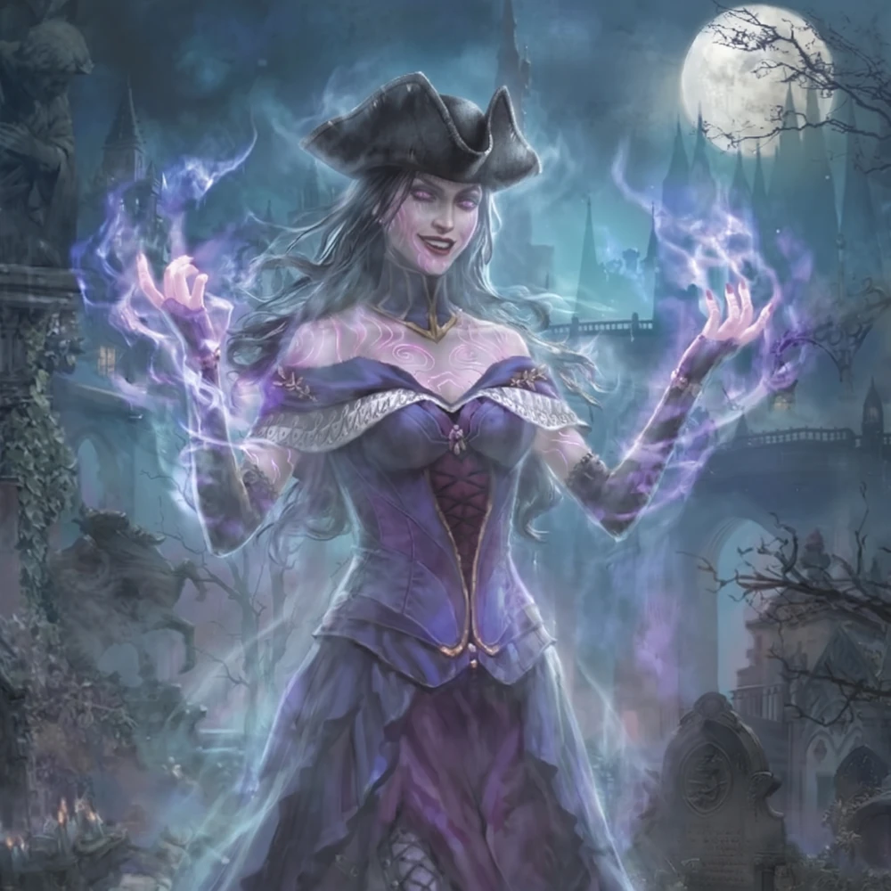

High Stamina
Gain an additional Stress slot at character creation.

Sorcerer Human Ridgeborne Level 7
Tell me, Whispering Stone, why do Hell's Bells toll for us?
Gain an additional Stress slot at character creation.
When you fail a roll that utilized one of your Experiences, you can mark a Stress to reroll.
You have advantage on rolls to traverse dangerous cliffs and ledges, navigate harsh environments, and use your survival knowledge.
Spend 3 Hope to reroll any number of your damage dice on an attack that deals magic damage.
Make a Spellcast Roll (10). On a success, you create a minor visual illusion no larger than yourself within Close range. This illusion is convincing to anyone at Close range or farther.
Once per long rest, you can place a domain card from your loadout into your vault and choose to either:
You can sense the presence of magical people and objects within Close range.
Emanation - Close
Your primal origin allows you to modify the essence of magic itself. After you cast a spell or make an attack using a weapon that deals magic damage, you can mark a Stress to do one of the following:
You can enhance the magic of others with your essence. When you Help an Ally with a Spellcast Roll, you can roll a d8 as your advantage die. Once per long rest, after an ally has made a Spellcast Roll with your help, you can swap the results of their Duality Dice.
You can gather magical energy to enhance your capabilities. When you take magic damage, you become Charged. Alternatively, you can spend 2 Hope to become Charged. When you successfully make an attack that deals magic damage while Charged, you can clear your Charge to either gain a +10 bonus to the damage roll or gain a +3 bonus to the Difficulty of a reaction roll the spell causes the target to make. You stop being Charged at your next long rest.
When you roll with Fear, you can mark 2 Stress to change it into a roll with Hope instead.
You have advantage on rolls to intimidate hostile creatures.
Make a Spellcast Roll (15). On a success, place a number of tokens equal to your Agility on this card (minimum 1). When you make an action roll while flying, spend a token from this card. After the action that spends the last token is resolved, you descend to the ground directly below you.
Make a Spellcast Roll (12). On a success, spend a Hope to teleport to another point you can see within Far range. If any willing creatures are within Very Close range, spend an additional Hope for each creature to bring them with you.
You can interrupt a magical effect taking place by making a reaction roll using your Spellcast trait. On a success, the effect stops and any consequences are avoided, and this card is placed in your vault.
Make a Spellcast Roll (15). On a success, you place an arcane marking on the ground where you currently stand. The next time you successfully cast Rift Walker, a rift in space opens up, providing safe passage back to the exact spot where the marking was placed. This rift stays open until you choose to close it or you cast another spell.
You can drop the spell at any time to cast Rift Walker again and place the marking somewhere new.
When 4 or more of the domain cards in your loadout are from the Arcana domain, gain the following benefits:
At the beginning of a session, place a number of tokens equal to your Spellcast trait on this card.
Make a Spellcast Roll against a target within Far range and spend any number of tokens to channel raw energy from within yourself to unleash against them. On a success, roll a number of d10s equal to the tokens you spent and deal that much magic damage to the target. Mark a Stress to replenish this card with tokens (up to your Spellcast trait).
At the end of each session, clear all unspent tokens.
Spend a Hope to allow a creature you can touch to climb on walls and ceilings as easily as walking on the ground. This lasts until the end of the scene or you cast Wall Walk again.
Spend a Hope to create a single, small floating orb that you can move anywhere within Very Far range. While this spell is active, you can see through the orb as though you’re looking out from its position. You can transition between using your own senses and seeing through the orb freely. If the orb takes damage or moves out of range, the spell ends.
Spend a Hope to activate Phantom Retreat where you're currently standing. Spend another Hope at any time before your next rest to disappear from where you are and reappear where you were standing when you activated Phantom Retreat. This spell ends after you reappear.
Make a Spellcast Roll against a target within Far range. On a success, you can use your mind to move them anywhere within Far range of their original position. You can throw the lifted target as an attack by making an additional Spellcast Roll against the second target you're trying to attack. On a success, deal d12+4 physical damage to the second target using your Proficiency. This spell then ends.
Handfuls 4 · Bags 2
Agility · Very Close · 4d10+8 mag
Powerful. On a successful attack, roll an additional damage die and discard the lowest result.
Finesse · Melee · 4d8 phy
Paired. Add this Secondary Weapon's tier + 1 to primary weapon damage to targets within Melee range
Instinct · Very Close · 4d10+6 mag
Powerful. On a successful attack, roll an additional damage die and discard the lowest result.
Knowledge · Close · 4d6+4 phy
Charged. Mark a Stress to gain a +1 bonus to your Proficiency on a primary weapon attack.
Thresholds 17/43 · Armor Score 6
Painful. Each time you mark an Armor Slot, you must mark a Stress.
This item represents enough rations to feed a character for a few days. So long as a character has this item on them when they travel, they do not suffer from the effects of hunger or thirst. If a character does not have this item on their person during a long rest taken as part of a travel narrative, they may not take the clear stress downtime action. Generally speaking, a character does not need to carry multiple uses of this item. Each item represents multiple servings of foodstuff. After a long rest, however, a GM may spend a Fear in order to force a character to make an Instinct Roll with a difficulty based on the terrain. On a failure, the character runs out of rations and must consume this item.
Clear 1d4 Stress.
Clear 1d4 HP.
You can drink this tea to unleash a fiery breath attack. Make an Instinct Roll against all adversaries in front of you within Close range. Targets you succeed against take d20 physical damage using your Proficiency.
As an action, you can splash the contents of this flask onto a creature within very close range. Make an agility attack against a target creature. If the target is a fiend or undead, it takes d12 magic damage, using your proficiency.
Spells cast while wearing this item ignore the Hell's Protection monster feature.
During downtime, you automatically clear a Stress.
You gain a +1 bonus to your Agility. You can only carry one relic.
Once per long rest, you can open this small box and roll a d12. On a result of 1–6, it’s empty. On a result of 7–10, it contains one random common consumable. On a result of 11–12, it contains two random common consumables.
You can attach this stone to a weapon that doesn't already have a feature. The weapon gains the following feature.
Powerful: On a successful attack, roll an additional damage die and discard the lowest result.
She Age 32 Faith: unclear
What did you do that made the people in your community wary of you?
What mentor taught you to control your untamed magic, and why are they no longer able to guide you?
You have a deep fear you hide from everyone. What is it, and why does it scare you?
Why do you trust me so deeply?
What did I do that makes you cautious around me?
Why do we keep our shared past a secret?
An unofficial fan site for a private Daggerheart campaign.